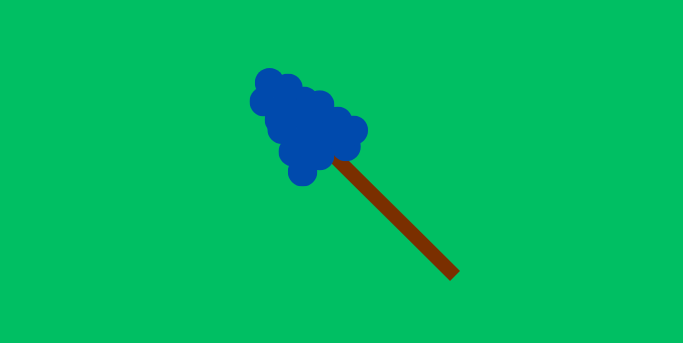
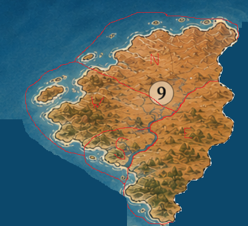

Erskijills flagga har grön bakgrund tack vare hur stor jordbruken är för samhället med drygt 13,5
miljoner invånare som har jobb inom jordbruk. I mitten av flaggan är Skijs symbol, en variant av en
thyrsos med en vindruvsklase på toppen istället för den vanliga kotten som brukar hittas på toppen
av en thyrsos. Under de senaste decennierna har det dock ifrågasats ifall det fortfarande med Skijs
symbol på flaggan tack vare hur procenten av befolkningen som är Dianer har krympt markant sedan att
det först bestämdes att Skijs symbol skulle vara på flaggan.
Distrikt
Landet är delat i fyra distrikt, de brukar kallas Nord, väst, öst och syd Erskijill. Medan regeringen har
uppgifter kring lagar och organisationer som skattemyndigheter, tar regionerna ansvar över saker som
skola, infrastruktur, polis, sjukvård och arbete med vatten.

Jordbruk
Marken kring Erskijills flodar är väldigt bördig och har goda förutsättningar för lantbruk, landet har
mycket fosfat som kan användas som gödsel vilket gör landet självförsörjande. Den allra vanligaste
grödan är vindruvor som odlas för de religösa aspekterna för Skij, vin som sedan säljs utomlands,
vilket är landets största export, och för att det har blivit en gröda med starka kopplingar till
kulturen i Erskijill oberoende på religion. Förutom vindruvor är det även vanligt att odla följande
grödor: fikon, bondbönor, majs, potatis, vete, bomull, dadelpalmer, lökar, gurka, meloner och lin.